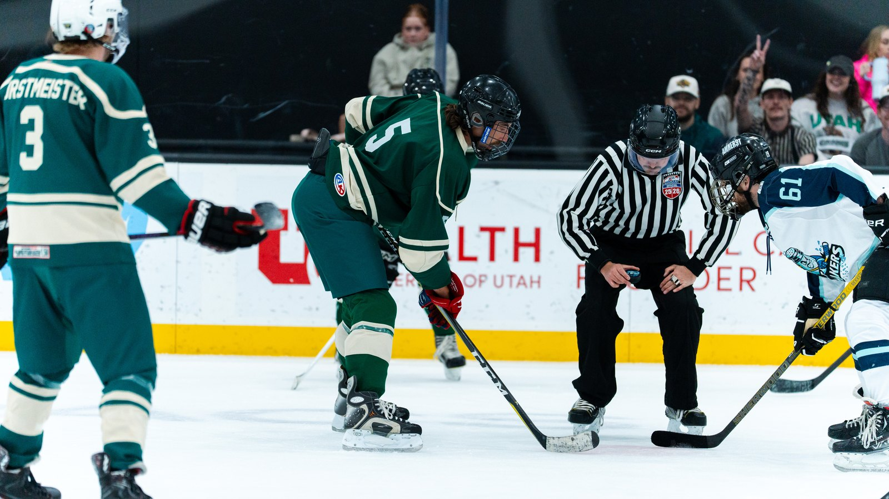

You've decided to play beer league hockey. Congratulations, you now need to become a temporary equipment expert. The good news: you don't need to spend like an NHL scratch to gear up. You need the right pieces, in the right order of priority, bought the right way. Here's exactly what to get, what to skip, and where to save your money for beer instead.
Here's everything on the ice with you, roughly in order of how much it matters to get right:
You don't need pro-level gear to play beer league — you need smart choices on the pieces that actually affect safety and performance. Skates should be bought new and properly fitted; a bad-fitting pair will ruin your first season regardless of price. Your helmet and mouthguard should also be new, for obvious reasons.
Everything else has room to flex. Shoulder pads, elbow pads, and hockey pants wear out slowly and are commonly sold gently used at gear swaps, secondhand shops, and online marketplaces. Your hockey bag can be the cheapest large duffel that holds everything — nobody's judging your bag.

Here's the counterintuitive part: skip the $300 premium stick. Beginners break, outgrow, or simply misjudge sticks constantly while their game is developing, and a single expensive twig snapping mid-season stings a lot more than a mid-range one doing the same. The better move is buying two or three solid mid-range sticks across the season instead of gambling on one top-tier model. We go deeper on exact stick picks, flex, and curve advice in our guide to the best hockey sticks for beer league in 2026.
If you're still working through the learn-to-play stage, there's no rush to buy anything beyond skates and a helmet — most programs cover the rest while you're learning. We rounded up every rink running adult beginner programs in our guide to hockey lessons for adults in Salt Lake City.
You don't need a full pro kit to skate with us — just the essentials, a good attitude, and a willingness to get chirped in the locker room. The Utah Glizzies were built for exactly this stage of the journey.
Meet the Team Go to The PitWhatever you buy, air it out after every session instead of leaving it zipped in the bag. Gear smell is a beer league legend for a reason, and the habit of drying your equipment properly from week one will save your car, your closet, and your teammates' noses for years to come.